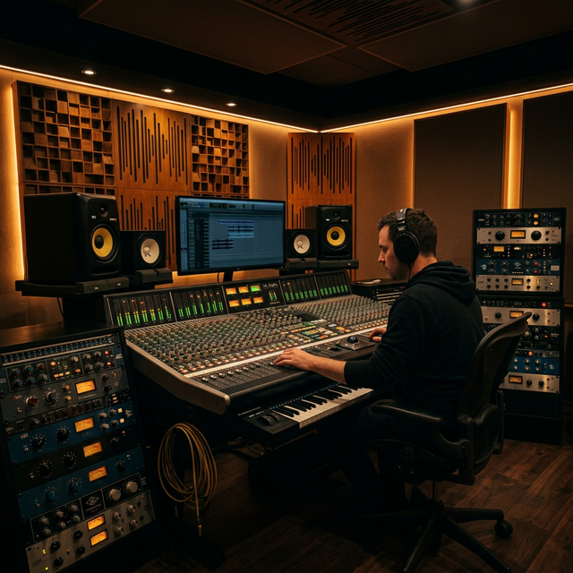
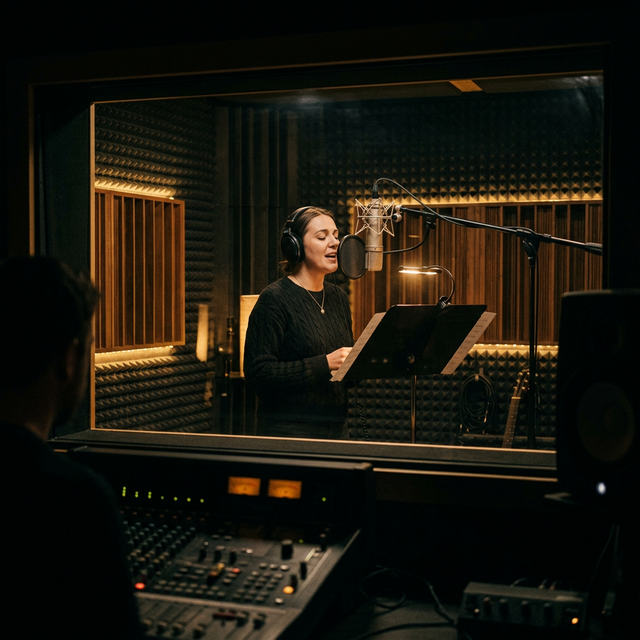

Profesionálně vybavené prostory v srdci Plzně — pro nahrávání, mixáž i masterování.

Srdce studia — akusticky vyladěná řídicí místnost s referenčními monitory KRK Rokit, analogovým mixpultem a rozsáhlým rackovou technikou. Poskytuje přesné referenční prostředí pro spolehlivý mix a mastering.
Propojení analogového a digitálního světa zaručuje teplý, přirozený zvuk s moderní přesností zpracování.
| Referenční monitory | KRK Rokit (žluté kužely) |
| Konverze | High-end AD/DA konvertory |
| Hardware rack | Kompresory, EQ, preamps |
| DAW | Pro Tools / Logic Pro |
| Kapacita | 2–4 osoby + zvukař |
Zvukotěsná kabina s proměnnou akustikou — ideální pro zpěv, mluvené slovo, akustické nástroje i elektrické kytary. Přes skleněné okno zachovává vizuální kontakt s řídicí místností.
Vybavena kondenzátorovými i dynamickými mikrofony přední kvality, rampou na nástrojové stojany a pohodlným prostorem pro klid při nahrávání.
| Mikrofony | Neumann, AKG, Shure |
| Preamp | API, neve-style preamp |
| Monitorování | Uzavřená sluchátka AKG K271 |
| Akustika | Proměnlivé akustické panely |
| Kapacita | 1–3 interpreti |

Nahlédněte do prostor, kde vznikají profesionální nahrávky. Klikněte na fotografii pro zvětšení.
Kontaktujte nás a domluvte si prohlídku nebo rovnou zarezervujte nahrávací čas.